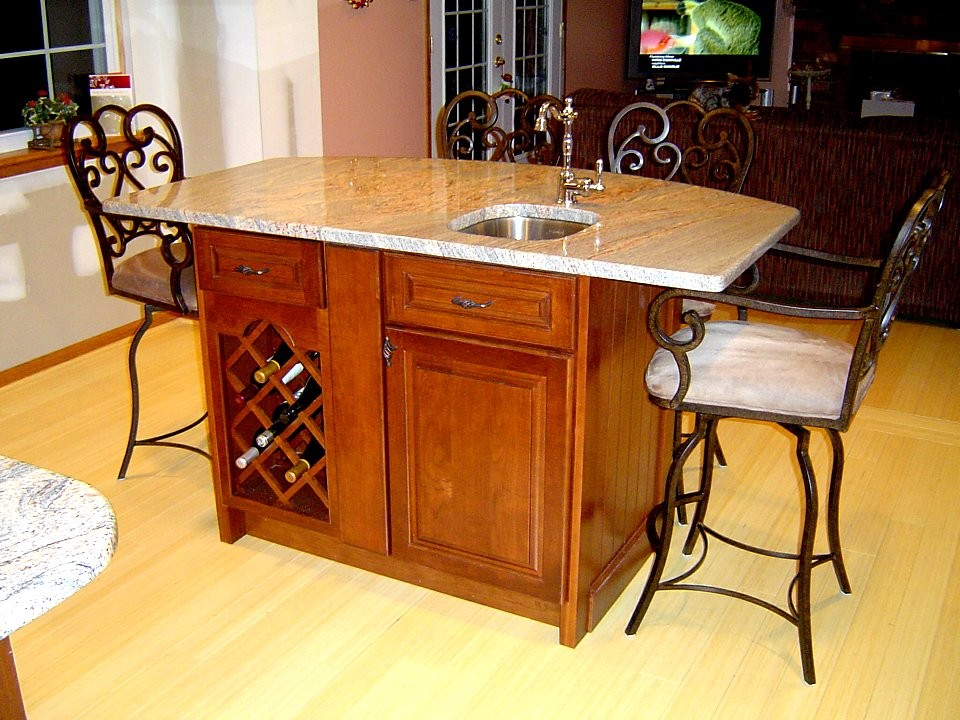
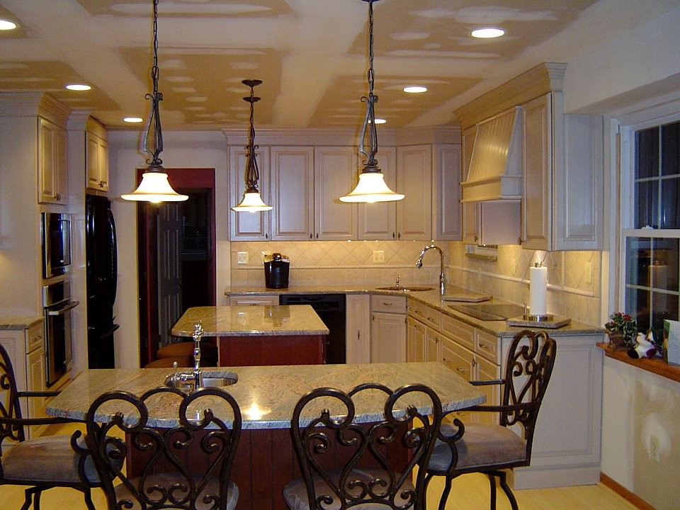

Member Ratings
Overall Grade: A
Hire Again: Yes
Approximate Cost: $9,000.00
Description Of Work: We give Gregg Hellings and his team well deserved high marks!
Member Comments: Our project was a kitchen update- counters, back splash, new serving area, sink, appliances and lighting. From day one Gregg was readily accessible and very responsive. He continually kept us informed about scheduling by phone and email, and worked with my calendar. He offered wonderful advice about what changes were do-able and what might be risky (he errs on the side of caution). Gregg's team of contractors were skillful, courteous and responsive. We always felt confident that what we requested is what we would get. Just imagine having a kitchen re-do without anxiety—that's what we got! Gregg truly checked over "every last detail" of the job as it progressed. Towards the end, we ran into a problem when a tool accidentally scratched our dishwasher during back splash installation. Without fanfare he took it upon himself to get us a brand new dishwasher door installed and made his apologies. During our initial conversations, we discussed a deadline and a budget and both of these were met. On top of his high standards and responsiveness, Gregg is very pleasant and personable. We will definitely be using him again!!
Member Ratings
Overall Grade: A
Hire Again: Yes
Approximate Cost: $60,000.00
Description Of Work: Anxiety-Free Remodeling Experience
Member Comments: The work included complete tear down and remodel of kitchen and den into a kitchen, laundry/mud room with built-in storage bench and shelving, half bath, and closet. From the beginning, Gregg stood out from the other contractors we met. He put in a lot more time and effort than any of the others in creating his initial estimate, including having his plumber come to inspect the foundations. The time and effort he spent even before we accepted his bid proved Last Detail to be the best for the job. Gregg is very trustworthy and punctual, and advised us throughout the process, including dissuading us from some more costly ideas we had that would put us over budget. He is very detail-oriented and he communicates those details to all the people he brings to the job. His estimate was on target, although we ended up spending more due to details/upgrades that we personally wanted, and there were a few unforeseeable "surprises" behind the walls when the demo began that increased the cost slightly. There were no cutting corners and everything was up to or exceeded code. He works with the same people on every job: plumber, electric, appliances, cabinetry, tile, and granite people. While initially we felt like we were running around to a lot of different places, everyone was first rate, professional and made the journey of picking a new kitchen/bath/laundry an easier experience. There were some hiccups in the timeline (including Hurricane Sandy) that made the remodel take longer than expected, however the overall outcome was worth the wait. Even after the work was done, Gregg was easily accessible and dealt with little details that we asked of him in a timely fashion. We whole-heartedly recommend Gregg and Last Detail for your future remodels!
Hire Again: Yes
Approximate Cost: $44,000.00
Home Build Year: 1928
Description Of Work:
Complete kitchen remodel including taking down a wall and bump out into dining room with breakfast bar- demo down to the studs. New tile floor, tile backsplash, cabinetry, granite countertop, electric and plumbing upgrades (old house!), dry wall, lighting, pantry door, kitchen door and storm door, matching laundry room door and storm door.
Member Comments:
A few months earlier, I had used Last Detail (after finding them on Angie's List) for a living room ceiling repair due to a water leak upstairs and into my garage. Through that job I saw that Gregg was top notch and could be trusted to do a great job without any of the horror stories you sometimes hear when people hire a contractor.
His was not the lowest bid, but I had peace of mind that everything would be done right, to a very high standard, without any drama. This is the one and only time I will be remodeling my kitchen, so I wanted to be happy with it. Gregg is very involved at every step of the way. He sent me to vendors who were knowledgeable, accommodating and did not try to push me into anything I didn't want. Barry, Steve, Mike and all the other guys arrived on time, cleaned up each day, were polite and professional and knew what they were doing. I felt very comfortable that they were working on and in my home. My new kitchen is beautiful! I love it! I am already planning my next 2 projects with Last Detail.
Hire Again: Yes
Approximate Cost: $50,000.00
Description Of Work:
Completely gutted the kitchen, opened one of the walls and installed all new cabinets, flooring, ceiling, walls, tile, plumbing and electric. Installed two new construction windows and two replacement windows.
Member Comments:
Very detail oriented. Owner very involved all of the way. He worked with us to design the new kitchen and provided digital drawings. Helped plan the cabinetry and presented several options for the space. Workmen were polite and cleaned up each day. They confined the dust to the areas being renovated. Anytime we had an issue the owner stepped in and made sure everything was to our satisfaction. He was here regularly checking on the project and the progress. He had good suggestions and was truly involved in every last detail. The whole project was completed on time and the work is beautiful!
I would rehire this contracted for any project in our house.
Hire Again: Yes
Approximate Cost: $45,000.00
Home Build Year: 1944
Description Of Work:
Last Detail Custom Carpentry performed a significant amount of work in my house as a result of a leak I had which resulted in significant water damage in the first floor and finished basement of my house.
Member Comments:
I cannot say enough good things about Gregg and the entire Last Detail Custom Carpentry (LDCC) crew. Absolutely amazing.
As a result of a refrigerator leak while I was out of town, I had significant water damage throughout my first floor and finished basement. All kitchen base cabinets were ruined, as was all the first floor flooring. In the finished basement the ceiling collapsed, the bottom 2 feet of drywall was ruined, and the carpet and padding was ruined. I called Last Detail (and several other contractors after meeting with the unreasonable and irrational insurance company representative. Gregg from LDCC came over and assessed all the needed repairs. He spent 2.5 months working with me (without a contract or signed commitment) helping me fight with my insurance company for the appropriate compensation. With Gregg's expertise and input I was able to get the insurance company to issue a supplemental payment doubling their initial payment to me. He was invaluable in getting the insurance company to properly cover the losses.
Once the work started Gregg and the entire LDCC crew continued to exceed all my expectations. The work performed by the LDCC crew was absolutely amazing. I am still in awe with how they transformed my house. In addition to the high quality work they performed, the entire LDCC team was friendly, courtious and treated my house like their own. The cleaned up the job site each day, asked for my input as they were working on items and patiently responded all my (sometimes stupid) questions.
This job required the use of numerous subcontractors (granite counters, wood flooring, carpet, painting, plumbing). Gregg made sure he was onsite when each subcontractor started any work and would frequently check in to make sure he was satisfied with the work they were performing. The few times he was not satisfied he made them correct it until he was. Throughout this entire project I felt that Gregg had my back. One anecdote that demonstrates this:
I had initially selected a prefinished engineered wood floor product for my entire first floor. As soon as the flooring contractor started to install the flooring we could tell that it was not looking as good as it should have. Both Gregg and I noticed this and met with the flooring contractor and manufacturer representative. I was expecting a big fight over correcting this item. I was wrong! Within 24 hours Gregg had arranged for the initial flooring contractor to remove all installed flooring and had engaged a new flooring contractor to install a custom site finished wood floor. All this was done at NO ADDITIONAL COST TO ME. I expected a fight, but Gregg had my back. He will truly do whatever is needed to make sure the customer is happy and make sure that the end product meets his exacting expectations.
In summary, choosing Last Detail Custom Carpentry for this project was the best decision I have made in a long time. LDCC will be my 'go-to' contractor for any future work I need performed.
Member Ratings
Hire Again: Yes
Approximate Cost: $12,000.00
Home Build Year: 1975
Gregg and his crew remodeled our living room. They demolished a wall-length mantle, covered the old brick and ledge with drywall, built in custom cabinetry on either side of the fireplace, and oversaw the installation of a gas fireplace, granite hearth, tiled surround, electrical work, and painting. They also built a mantle above the fireplace and beam to go across the ceiling to match the rest of the room.
Prior to the renovation the room was dark with a non-functioning fireplace, t.v. in the corner and long sharp brick hearth that was a safety hazard for the kids, and an entire wall of dirty brick with no storage space. To say this renovation changed the feel of the room and the house is an understatement: we spend so much time in here now, the kids are safe, and it's the 'crown jewel' in our home!
Member Comments:We received three estimates for this room. Two were almost exactly the same price (including the one from Last Detail) and the other twice as much. We decided to go with Gregg due to the price, ideas for the room, issues he pointed out and addressed, and general feeling that he would be the right choice. It did take awhile to get on the schedule, but that was due to supplies taking a while to come in from other vendors NOT related to Last Detail.
Once they got started, we could not have been more impressed with the crew. They were friendly and very professional. They used subcontractors for this job when it came to specifics: painting, electrical, tiling, etc. All were handpicked by Gregg and they were TOP NOTCH. Gregg was the one in charge and literally made sure every detail was perfect. The only issue we had was with the fireplace company. Gregg communicated with them way in advance regarding the specs of the project, and the fireplace company gave the wrong information. Gregg's crew had to spend half a day fixing the work to comply with the specs. Truthfully, I expected we'd have to pay more due to this but Last Detail was completely ethical and took the hit despite it NOT being their fault.
It came together so quickly, and after about two weeks we had a gorgeous new living room just in time for the holidays. It was a total game-changer. We now spend just about every night in the room by the fireplace and playing with the kids. I'd hire Last Detail again in a heartbeat!
Member RatingsHire Again: Yes
Approximate Cost: $40,000.00
Home Build Year: 1978
Description Of Work:
We hired Last Detail Carpentry to act as the General Contractor for a full kitchen remodel.
Member Comments:
We are do-it-yourselfers, but we decided that we did not have time to do a full kitchen remodel. Having heard kitchen remodel horror stories from friends, we were very nervous about the process. Therefore, we selected the top-rated companies on Angie's List and interviewed each of them. Gregg, from Last Detail, quickly separated himself from the pack. He was prompt, courteous, professional, knowledgeable and most importantly, he showed that he was truly interested in our project and was willing to earn our business. He spent several weeks working with us on several kitchen island designs, without any official commitment from us. Several of the other companies wouldn't even speak to us about kitchen design; those companies required a $1000 deposit first. When Gregg's official bid came in, and it was competitive with others, we knew that he was the one we wanted to work with.
Being do-it yourselfers, we wanted to talk through and understand what was being done through each step of the process, and Gregg was very willing to discuss any detail, from project timelines to how molding would be mitered. Throughout the process, he took the time to listen to any questions/concerns, no matter how small. He understood our budget and kept that in consideration with any of his advice/recommendations.
The highest praise that I can give is that Gregg truly cared about our project and, throughout the process, made it clear that he was going to do whatever it took to have the end product be a success. Gregg reviewed each aspect of the project, and any small detail that did not meet our expectations or his expectations was corrected. For example, Gregg personally inspected every cabinet door and sent back several cabinet doors that were not to his liking. He also had the tile guys come back to our house to replace a single tile that was not aesthetically on par with the rest of a beautiful backsplash.
In our opinion, Gregg treated our kitchen like it was his own. We are thrilled with the end product and Gregg will be the first person we contact for future projects.
Member Ratings
Hire Again: Yes
Approximate Cost: $12,000.00
Home Build Year: 1989
Description Of Work:
Member Comments:
Last Detail-Greg Hellings is an excellent contractor. From the first day he came out to our house for the estimate to the very end of the project, he treated our house like it was his own. He went out of his way to help with issues that he really didn't have to do. He always explained things in detail and was always there when he said he would be. The guys on the job were friendly, on time, and very hard workers. I love my new kitchen. I would highly recommend Greg and would definitely use him again in the future.
Description Of Work:
I had Last Detail work on major renovations twice in a period of 5 years. First was a home addition and total kitchen renovation. This involved bumping out an exterior wall, adding roof, windows, sliders, footings, flooring, HVAC, and then all kitchen appliances, cabinets, plumbing, gas lines, hardwood floors, lighting, ceramic tile and granite.
Second was a complete renovation of our family room and office area. This involved new windows, new drywall, complete insulation, new doors, custom cabinetry for storage, lighting and HVAC work.
Both were extensive jobs involving multiple trades.
On both jobs we were 150% thrilled with the outcome, but more importantly, with the professionalism of the contractor and all subs brought in on the jobs. It is not common to get a schedule at the start of the job and have every deadline met, every subcontractor perform their work within the schedule, and have oversight at this level. We have worked with others, and cannot say enough about now this experience exceeded any other in every way. The estimate/pricing was accurate, with no surprises or "unexpected add-ons". The crew was polite, considerate of our home and belongings, and totally trustworthy to have in our home. Each night the entire job site was cleaned and left in order. Each day the work was reviewed with us so that we were aware of every aspect of the project, what to expect the next day, and to answer all questions. The outcomes of both jobs were terrific! All subcontractors, from electric to plumbing to drywall and HVAC, were skilled and professional. Our experience is not like that of anyone else using a general contractor for remodeling work. We would use Last Detail again and again, and we recommend them HIGHLY to anyone.
Member Comments:
When each job was completed, the contractor responded months later to any minor detail that needed attention. There was never a hesitation to come back and "fix" something that needed adjustment. Having a general contractor supervise and coordinate all aspects of a remodeling job is something that is worth the additional cost, over trying to coordinate all the subcontractors on your own. It might cost a little more, but it is the best use of resources (money and time) that you can spend. This is a contractor who knows how to deal with customers, how to price and schedule a job, and how to brainstorm and manage every "Last Detail". All contact, whether calling back, billing, scheduling, etc., was in the most professional manner. Fabulous customer relations.
Description Of Work:
We had a major master bedroom/bathroom addition/bump-out added to our second floor. Along with that we replaced our hot water tank for full home tankless system. Parts of the existing first floor below the addition were gutted, spray foamed/ re-insulated and new electric and lighting were installed along with new duct work and refinished. Ceramic tile and floor heating was installed through out the new master bedroom bathroom portion. A two person shower and double floating vanity and custom built in wardrobe was installed. New siding, gutters and roofing was installed to new and existing structure. While the house was being worked on we also had other things done not in the original estimate such as adding recessed lighting to all the bedrooms on the second floor, foam insulation to lower level, outdoor lighting and various other custom updates to the this 1960's tri-level home.
Member Comments:
We selected Last Detail primarily because of he Angie's list reviews and he was the only contractor who said we needed to get an architect. We went with Gregg's recommendation of John. We were glad we did. Those plans were used daily. Although the project took some time to actually get started, once underway it went like clock work. I have had other work done with other contractors and weeks would go by during construction and no work done, not the case with Gregg and his team. They had a schedule and a plan. There was always constant dialog. As with any major renovation, things wont always go as planned. Anytime Gregg's team came across an issue they were great at explaining it, working with me, and finding a solution to getting to where we wanted to be. Being the designer of the new space, I am not a professional, they were very helpful with bringing my modern/contemporary vision to life. I cant say enough how pleasurable it was to work with Barry and Eric on his team. We added many upgrades and additional work during the process and these guys were always up for the task. We are very happy with our new space and all the additional work we had done by Last Detail
Description Of Work:
My wife and I love our 90-year old stone home in Mt. Airy PA and wish to remain here as long as feasible. Over the 13 years we have owned the house, we have become aware of its aging infrastructure, particularly original plumbing and electric, and also our wish list of improvements. We bundled these desires into a scope of work that included 1) complete demolition down to the framing of 3 bathrooms, 2) demolition to existing walls of kitchen, laundry room, and powder room, 3) construction of built -in living room bookshelves along one wall and a wardrobe closet along a wall of our dressing room, 4) substantial repair to a stone and stucco garage interior and construction of a moisture barrier with french drain in back, 5) additional painting in the areas neighboring the rooms under renovation. riously. We sometimes were surprised, even amused, by the "last detail" to which he attended to the project - calling a
Our project was so extensive, my wife and I moved out for the 4 months of work. This saved us time, money, and stress. Gregg Hellings, the owner of Last Detail was at the work site most days there was work going on, and he has a superb crew of carpenters, one of whom acted as foreman. We interviewed Gregg along with 4 other highly reputable general contractors with experience in Philadelphia-area stone homes, and he stood out for 1) the energy and enthusiasm with which he pursued the bid, 2) the personal qualities of the subcontractors he brought through to work on the job, 3) the stamina he displayed in trying to meet both our price and scope of work boundaries, 4) Last Detail's highly positive references from prior clients (through phone conversations). Gregg takes the name of his firm, Last Detail, seriously - we were sometimes surprised by the extent to which he thought of details that we never had on our mind. As the project proceeded, Gregg would often say, "I want to give you choices," pointing out alternatives we had never considered for doing what we asked or addressing a problem.
He was quick to respond to any requests to do something differently than we had originally asked for. In a house like ours there are inevitably hidden conditions that emerge during the job, and Gregg would be clear about what should be done and how much it would cost. He occasionally absorbed the costs of additional expenses he could have charged to us. Gregg and every one of his subcontractors - and on a job like this there were many many firms and individuals working in the house - was a pleasure to work with and produced excellent work. One warning - part of Gregg's effectiveness in meeting budget and timetables (and he met both) is his capacity to stay on top of all the pieces of a job and do what is necessary to get the people and materials needed for a piece of work on site on time. That good quality was also true of his relationship with us.
He was clear and unrelenting on getting us to meet with him or one of his employees or subcontractors when we needed to make decisions to allow the job to proceed as it was ready - we received countless emails, phone calls (we were living not on site), many with requests for a meeting - always stand-up and efficient. To work with Gregg at his best, the client needs to be "hands on" and ready to do what is needed, either on site or at a store selecting items for installation. We have been in our "new" home for a month and are very pleased.
Member Ratings
Description Of Work:
- Full renovation of 2 1/2 bathrooms including a full gut and expansion of the master bathroom (new tiling, shower, sinks, cabinets, and light fixtures) - Removal of existing foyer floor and installation of new tile floor - Installation of crown molding in several rooms
Member Comments:
We purchased a 30 year old home last summer that needed work - all the bathrooms were still original, as was the foyer floor. After getting bids and proposals from 3 contractors we decided to work with Greg at Last Detail. His bid was not the lowest, but his proposal was the most detailed by far. In addition as we went through the house discussing what we wanted, Greg made a number of suggestions that we had not thought of that enhanced the changes we wanted to make. He also told us when we really didn't need to do something. The crew worked for about 3 months and of course adjustments were made along the way, but nothing was ever done without consultation. The guys on the job were friendly, punctual, hard-workers. All in all we were very happy with Last Detail and expect to be using them again.
Description of Work:
Kitchen remodel with the removal of a wall between the kitchen and family room. Kitchen was demolished all the way down to the studs and floor boards. Plumbing and electric and appliances had to be moved.
Member Comments:
We started our project in May of 2008 with the hopes of having it done by the end of the summer. The project did not get started until September of 2008. This has nothing to do with Gregg or Last Detail. If you are considering doing a large project like this, be realistic. It takes more time than you expect. By the time you get all your proposals, pick out the materials and colors, fit into the contractors' schedule it takes a few months (if you want to do it right). If Gregg tells you it is better to wait for the cabinets to come in before they start any work - BELIEVE HIM. My nightmare was my cabinets. From start to finish. That is all I will say about the cabinets. I made a settlement with the manufacturer that was fair and I cannot talk about it. AND AGAIN THIS HAD NOTHING TO DO WITH GREGG OR LAST DETAIL CUSTOM CARPENTRY. I WOULD HAVE NOT HAD REACHED A SETTLEMENT WITHOUT GREGG. This is also why it took almost 5 months to complete the project.
That said, the quote, the work, the professionalism and the patience we received from Gregg was top notch and we would highly recommend him.
Member Ratings
Member Photos:
 
Description of Work:
Gregg and his team completely renovated my kitchen and master bath and also added a bathroom on my first floor. In the kitchen he removed the linoleum floor and installed tile in its place. They completely gutted the room and supplied and installed new beautiful maple cabinets, new Formica counter tops with a tile backsplash. All new appliances and lighting in the room as well as a new sink and faucet. My master bathroom was also completely redone. They replaced my tub/shower and supplied and installed a new vanity with marble top and new toilet, sink, and faucet. I love my new medicine cabinet and wall sconces on each side of it! They also redid my linen closet so I actually have room to put things now. On my first floor they created space for a bathroom complete with a shower that has a seat. It has a pedestal sink and faucet, a medicine cabinet with light and a beautiful tile floor. They created the space big enough to make the bathroom but still managed to also create a coat closet on the opposite side which I never had before. In addition, Gregg's crew installed new steps to my basement and beautiful oak stairs to my second floor with a gorgeous railing.
Member Comments:
This experience could not have gone any better!! This is my first house and I was very nervous about hiring a contractor to do so much work in it. I met with several contractors and chose Last Detail because from the minute I met Gregg I knew we would work well together. Gregg was very prompt returning calls, very easy to talk to, and I could tell he thought through details ahead of time. He asked more questions than any of the other bidders and I could tell he was going to be very thorough. He and his crew were exactly as I heard he was from friends and coworkers. Gregg and his crew were prompt, courteous, detail oriented, stayed on schedule and on budget throughout all of my projects. He kept me informed throughout the work so I always knew what to expect and when to expect it. The finished product is better than I ever dreamed it would be. I will hire Last Detail again.
Description Of Work:
Last Detail performed the remodeling of our kitchen that entailed removal of flooring and replacement with hardwood flooring, removal and reconfiguration of interior to and including the exterior siding and trim, construction and installation of new interior drywall and trim, windows, interior and exterior doors, cabinets, plumbing, electrical wiring and lighting. Last Detail also coordinated the delivery and installation of appliances, and refinished hardwood floors in first floor of the house.
Member Comments:
Last Detail was excellent! The kitchen looks spectacular and we are extremely happy with the process and the outcome! Gregg worked with us from the beginning of planning and development of our plans to find out what we were looking for and then sent us to cabinet, granite, tile and plumbing businesses to pick out our cabinets, countertops, backsplashes and fixtures for our kitchen. Once we negotiated the work and the price, they began work and kept us informed on a regular basis by phone and emails. Gregg discussed the schedule and plans for the kitchen and how the work would proceed and was exceptional at describing issues that came up during construction that were not identified or expected. Gregg and his crew, led by his foreman Brian, were very courteous and kept the work and storage areas clean and orderly. We were living in the house during construction, but the workers kept the remainder of the house clean and removed dust and debris daily.,
Description Of Work:
Complete Bathroom Remodel: complete demolition and rebuild of 2nd floor main bathroom.
Member Comments:
Gregg's group did an outstanding job on this project. Their work was careful and thorough. Gregg was tremendously helpful in planning and carrying out this project. His workers and subcontractors were equally professional and easy to work with.
I particularly appreciated Gregg's patience and willingness to "go the extra mile" to listen to what we were trying to accomplish in the remodel, and then working with us to figure out the best way to carry it out. This was particularly true during the early planning stage when our initial plans were not yet well developed. Also during the reconstruction there were a few changes that needed to be made on the fly, and he was able to do all this seamlessly and right on schedule. Well done Gregg!
I certainly recommend this group to anyone contemplating a major home project.
Member Ratings